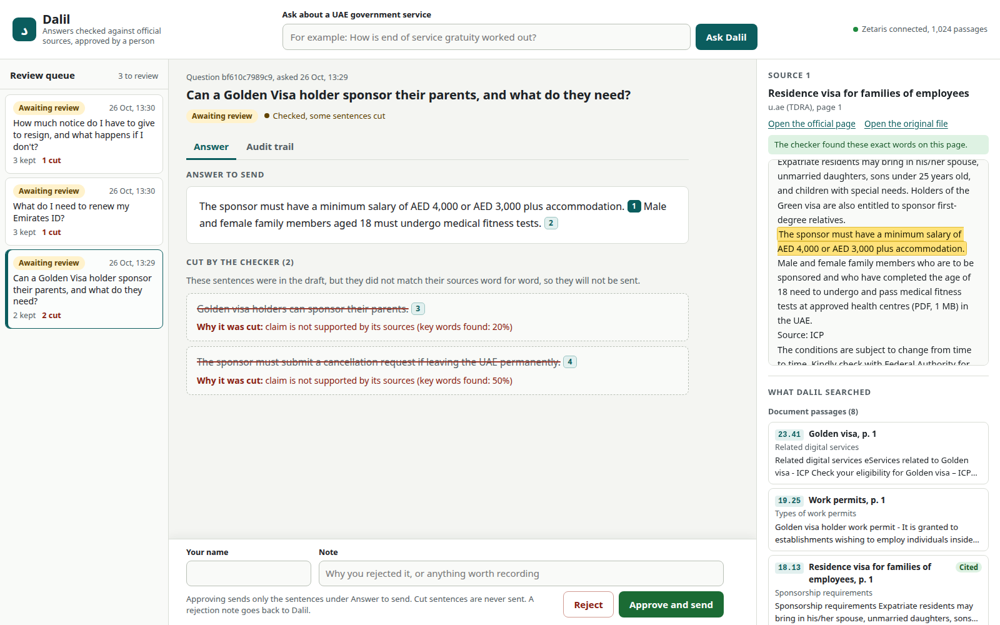

dalil| App | Python 3.13, FastAPI, SQLite audit trail, plain HTML, CSS and JavaScript screen |
| Zetaris | Lightning 2.4.3.1, the free local version: documents, pages, passages and four Bayanat open datasets in one database |
| Meterless | H-MEM reference engine on Node: review memory and trust ledger |
| NVIDIA | Nemotron 3 Nano 4B drafts, Nemotron-3-Embed-1B for dense search, both local through llama.cpp |
| Search | BM25 fused with the Nemotron embeddings |
| Size | 45 documents, 349 pages, 1,024 passages, 4 open datasets, {{TEST_COUNT}} tests |
Documents, pages, passages and four Bayanat open datasets live in one Lightning database.
A number from open data is cited as a Zetaris query. The checker reruns that query before the sentence may stay.
Zetaris proves every passage equals its slice of the page: 1,024 of 1,024.
Every approval and rejection lands in H-MEM's append-only trust ledger, with the passages it cited.
Before drafting, Dalil recalls reviews of similar questions and leaves out passages a reviewer rejected.